บทที่ 20 / 29
ซิลฟ์คอมพานี<Silph Co.>
❖
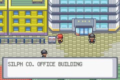
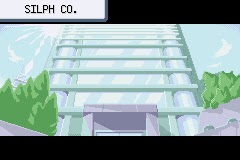
เราไม่สามารถไปชั้น11 ไปช่วยผอ.บริษัทได้ทันที เพื่อความสะดวกขอให้ทำตามเป็นข้อๆนะครับ 1.ขึ้นไปชั้น5 แล้ว สู้กับคนที่อยู่ล่างซ้ายสุด ด้านขวาของเขาจะมีที่วาร์ป ให้เราวาร์ปไป แล้ววาร์ปกลับ แล้วเดินไปทางขวา
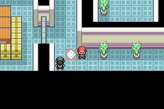
2.เดินไประยะหนึ่งจะเจอคีย์การ์ด<Card Key> ให้เราเก็บไว้
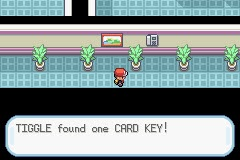
4.ไปชั้น3 เข้าจุดวาร์ปตรงที่มีที่กั้น2ที่กั้นคั่นอาไว้ อยู่ตรงด้านซ้าย โดยในระหว่างที่กั้นจะมีโต๊ะอยู่ตรงกลาง โดยจะไปชั้น 7 เราจะต้องสู้คู่แข่งที่นี่ เลเวลโปเกมอนของเขาอยู่ที่35-40 แล้วคุยกับคนใกล้ๆแถวๆนั้น จะได้ ลาพาลัส (No.131)เลเวล25 เป็นของฝากด้วย
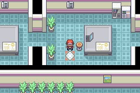
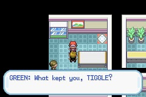
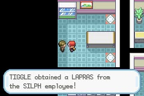
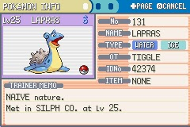
5.วาร์ปไปชั้น11 สู้กับหัวหน้าทีมร็อคเก็ต Giovanni
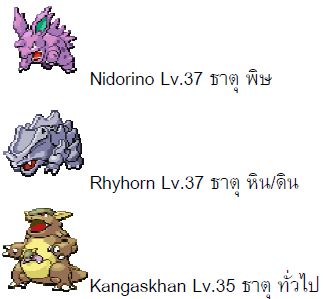
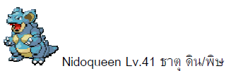
เมื่อชนะเขาแล้วทีมร๊อคเก็ตจะสลายตัวไป ให้เราไปช่วย ผอ.ได้เลย แล้วจะได้มาสเตอร์บอล ซึ่งใช้จับโปเกมอนได้ไม่มีพลาด เป็นของตอบแทน
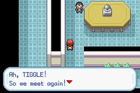
ตอนนี้เราสามารถเข้ายิมได้แล้ว ในยิมจะมีจุดวาร์ป ให้เราเหยียบตามนี้: เหยียบอันแรก, ซ้ายล่าง, ซ้ายล่าง,ขวาบน และซ้ายล่าง หัวหน้ายิมนี้ชื่อนัทสึเมะ<Sabrina>ใช้โปเกมอนพลังจิต ให้เราใช้โปเกมอนโปเกมอนแมลง หิน โกสต์ ในการสู้
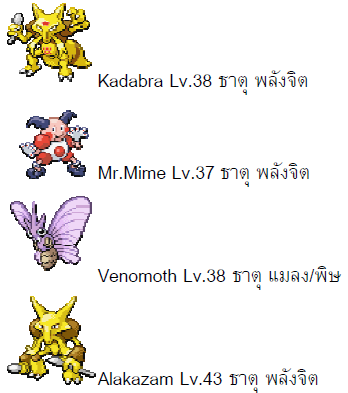
เมื่อชนะเราจะได้ Marshbadge ที่ทำให้ควบคุมโปเกมอนเลเวลต่ำกว่า70ได้ พร้อมตังค์4300เยน และ TM04 Calm Mind
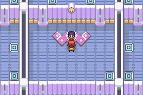
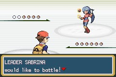
พอสู้เสร็จแล้วให้เราแวะกลับไปที่เมืองเซคิชิคุซิตี้ แล้วเดินลงทางใต้ซึ่งเป็นถนนหมายเลข19 ให้ใช้ท่าจากHM03ในการว่ายน้ำ ผ่าน ถนนหมายเลข19และ20 ไปจนถึงเกาะฝาแฝด